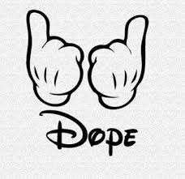
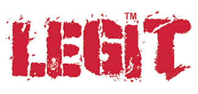
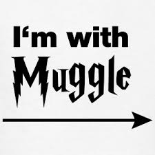
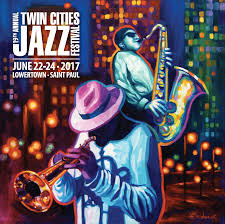

Meaning a huge amount of money or value, an arm and a leg may have come to its current meaning after World War II to represent the enormous sacrifices amputated veterans made for their countries. Though they didn’t pay with their lives, an arm and a leg is still a whole lot to lose.

Dope
Dope has two primary origins. Doop is Dutch for “sauce” but dope can also refer to a fool. In the early 1800’s, any thick lubricant was called dope. A further refining of the word led to the meaning of the goop/sauce-like brown gunk that is opium.

Dating back to famous circus leader P.T. Barnum, the bandwagon was the vehicle that carried the circus group. As circuses were quite popular and attracted many people, politicians started using bandwagons to campaign in the late 19th century. From there it took on the meaning to show support for a politician (or anything, nowadays).

Legit
The word originally showed up at the end of the 19th century. Theatre groups used it to refer to “legitimate drama”, a well-written piece.

It’s not clear how the birds and the bees came to be a conservative way of explaining sex to kids, but Cole Porter’s 1928 song “Let’s Do It” certainly seems to reference it as common speak. “And that’s why birds do it, bees do it, Even educated fleas do it. Let’s do it, let’s fall in love.””

Muggle
All the Potterheads will be interested in this one. J.K. Rowling likely made the word muggle from the word mug (meaning fool in British English), but muggle used to mean “a tail like that of a fish”, a “female sweetheart”, or a joint of ganja.
Geek first showed up in northern Britain in 1876 to refer to a fool. Americans tweaked the meaning and by 1957 it meant “unsociable and over-diligent student”.Once computers turned up in the 80’s, geek also came to refer to as “an expert in computers or science”.

This one doesn’t go to Xzibit from Pimp My Ride; rather, trick has meant “to dress, to adorn” for a half millennium. That’s where today’s meaning of being decked out comes from.

Jazz
The musical style we know as jazz first got its name in 1915, attributed to the word’s prior meanings of “nonsense” or “energy, excitement”.